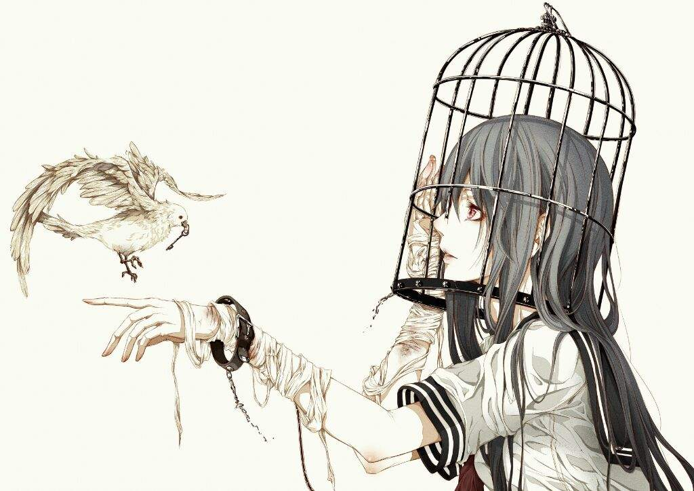

Una parte del mundo se enorgullece de disfrutar de una bien ganada libertad de expresión, mientras que en otras partes del mundo los pensamientos son censurados, y las personas que los hacen visibles son castigadas por expresar libremente sus ideas. Sin embargo, esa libertad de expresión -de la que disfrutamos muchos- no siempre viene acompañada de libertad de pensamiento. ¿Qué sentido tiene, entonces, ser libre para expresarse si no se siente libertad para pensar?. Por curioso que parezca, no tenemos tanta libertad para expresarnos como pensamos, sencillamente porque todo el mundo se siente libre de pensar. Pero, ¿dónde está la censura? Más que de censura de lo que tenemos que hablar es de manipulación.La forma de hablar es el resultado de la forma de pensar. Es decir, el proceso de pensamiento se refleja en la forma de expresarse y comunicarse a través del lenguaje. Por lo tanto, cuanto más libre de pensamiento es una persona, mayor discurso propio reflejará su mente. Por el contrario, cuanto más manipulado esté el pensamiento, menos capacidad tendrá la mente para elaborar ideas propias.
~La libertad significa mucho para las personas~

Ahora seamos sinceros, creo que no soy el unico que ah pensado sobre esto alguna vez. Para mi, aquellas personas que pueden expresarse y sin necesidad de utilizar las palabras, son oro puro, y que si estas personas estan sufriendo, te lo haran saber indirecta o directamente utilizando como alternativa un dibujo, una pintura, una escultura una imagen y/o fotografia. Estas personas buscan darse a conocer utilizando su talento o habilidad, y estan preparadas para cualquier adversidad, algunos los llaman artistas, dibujantes o sketchers, yo sin embargo, los llamo maestros.